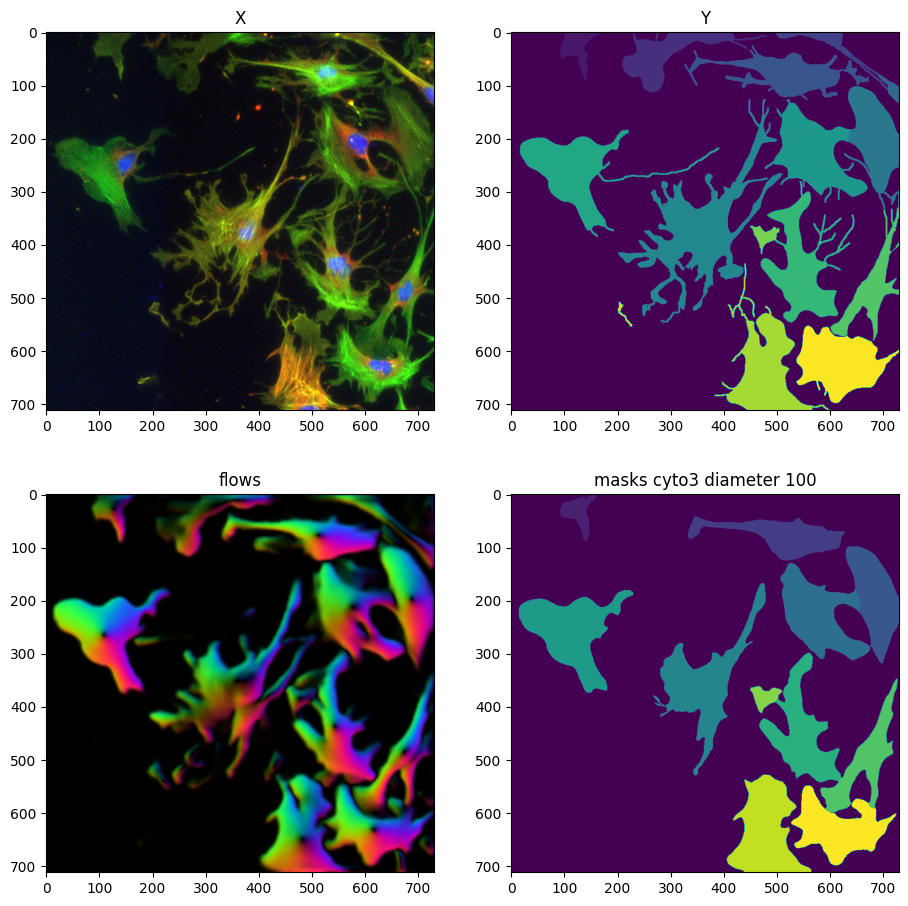
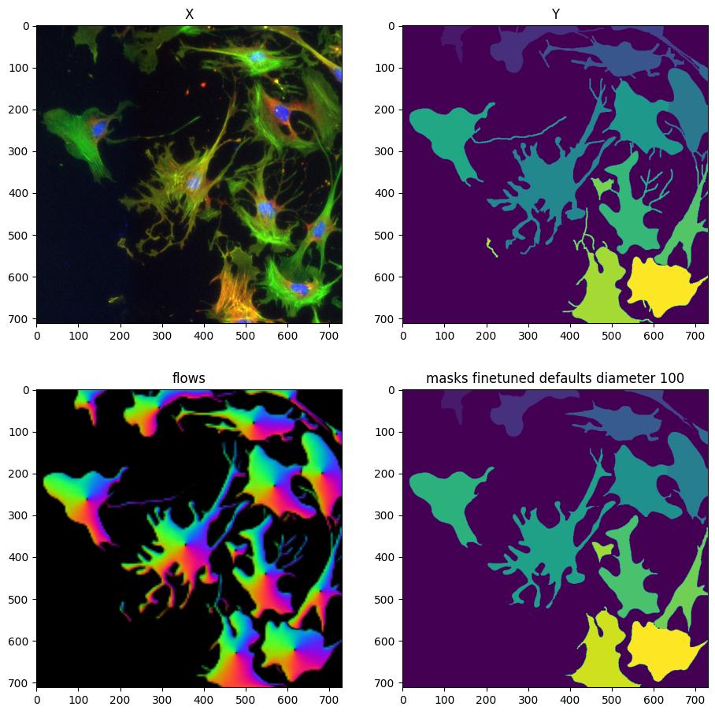
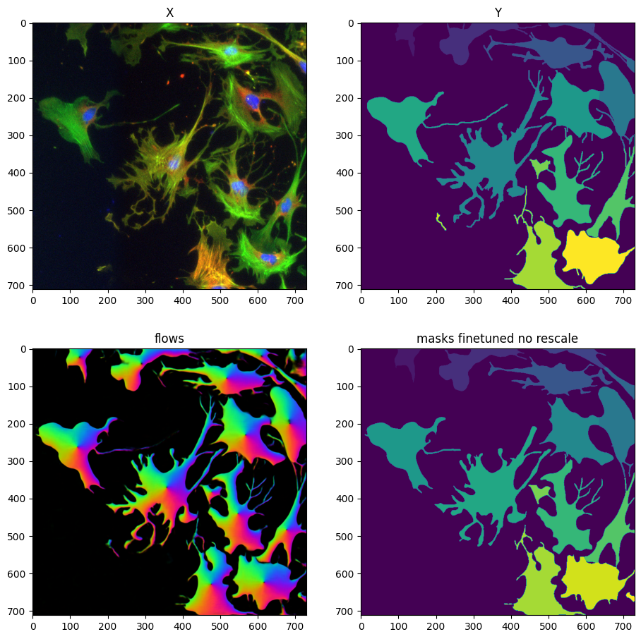
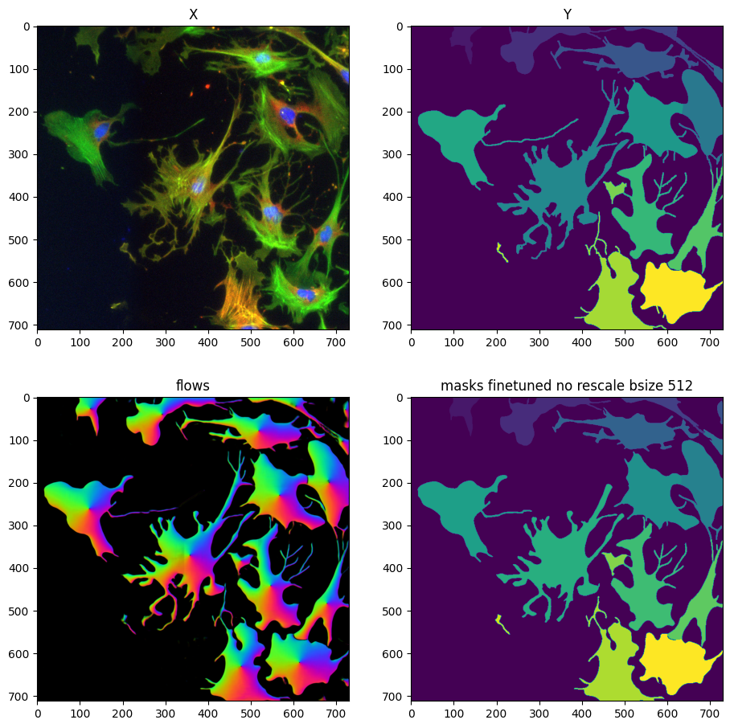

Large objects with protrusions#
In this example, inspired by this Image.sc question we try to finetune Cellpose to segment large objects with long protrusions.
from skimage.io import imread
from tnia.deeplearning.dl_helper import quantile_normalization, get_label_paths
from tnia.plotting.plt_helper import imshow_multi2d
import json
import os
from skimage.measure import label
from cellpose import models, io
data_path = r'../../data'
parent_path = os.path.join(data_path, 'protrusions')
label_path = os.path.join(parent_path, 'labels')
# open the info file
json_name = os.path.join(label_path, 'info.json')
json_ = json.load(open(json_name))
# get number of inputs and number of ground truths for this problem
num_inputs = json_['num_inputs']
num_ground_truths = json_['num_truths']
print('num inputs: ', num_inputs)
print('num ground truth: ', num_ground_truths)
image_label_paths, ground_truths_label_paths = get_label_paths(1, num_ground_truths, label_path)
print('image label paths',image_label_paths)
print("ground_truth_label_paths", ground_truths_label_paths[0])
X = imread(os.path.join(image_label_paths[0], 'img153_0.tif'))
Y = imread(os.path.join(ground_truths_label_paths[0], 'img153_0.tif'))
X = quantile_normalization(X, channels=True)
Y = label(Y)
fig = imshow_multi2d([X, Y], ['X', 'Y'], 1, 2)
num inputs: 1
num ground truth: 1
image label paths [WindowsPath('C:/Users/bnort/work/ImageJ2022/tnia/notebooks-and-napari-widgets-for-dl/data/protrusions/labels/input0')]
ground_truth_label_paths C:\Users\bnort\work\ImageJ2022\tnia\notebooks-and-napari-widgets-for-dl\data\protrusions\labels\ground truth0
model_cyto3 = models.CellposeModel(gpu=True, model_type="cyto3")
model_finetuned_defaults = models.CellposeModel(gpu=True, model_type="cyto3")
model_finetuned_no_rescale = models.CellposeModel(gpu=True, model_type="cyto3")
model_finetuned_no_rescale_bsize_512 = models.CellposeModel(gpu=True, model_type="cyto3")
logger = io.logger_setup()
masks = model_cyto3.eval(X, diameter=100, channels=[2,3])
fig = imshow_multi2d([X, Y, masks[0]], ['X', 'Y', 'masks'], 1, 3)
creating new log file
2024-10-25 20:04:35,397 [INFO] WRITING LOG OUTPUT TO C:\Users\bnort\.cellpose\run.log
2024-10-25 20:04:35,398 [INFO]
cellpose version: 3.0.9
platform: win32
python version: 3.10.14
torch version: 2.2.2+cu118
Replicate training image to minimize ‘randomness’ in training#
Here we copy the training data 100 times. Cellpose training has a built in augmentation step (which I don’t think we can turn off through the API.. correct me if I missed this option). Thus if we only have 1 training image, each epoch will consist of 1 augmented image, and the model at the end of an epoch can be randomly different depending on the augmentation… however if we present 100 of the same images, an epoch will consist of 100 random augmentations, thus minimizing the randomness.
X_list = [X]*100
Y_list = [Y]*100
print(len(X_list))
100
from cellpose import train
train.train_seg( model_finetuned_no_rescale.net, X_list, Y_list,
channels=[2,3],
save_path=parent_path,
n_epochs=500,
min_train_masks=0,
rescale = False,
model_name='no_rescale',
normalize=False)
2024-10-26 06:37:55,489 [INFO] computing flows for labels
100%|██████████| 100/100 [00:28<00:00, 3.57it/s]
2024-10-26 06:38:23,640 [INFO] >>> computing diameters
100%|██████████| 100/100 [00:00<00:00, 421.16it/s]
2024-10-26 06:38:23,881 [INFO] >>> using channels [2, 3]
2024-10-26 06:38:24,448 [INFO] >>> n_epochs=200, n_train=100, n_test=None
2024-10-26 06:38:24,450 [INFO] >>> AdamW, learning_rate=0.00500, weight_decay=0.00001
2024-10-26 06:38:24,452 [INFO] >>> saving model to C:\Users\bnort\work\ImageJ2022\tnia\notebooks-and-napari-widgets-for-dl\data\protrusions\models\no_rescale
2024-10-26 06:38:26,875 [INFO] 0, train_loss=0.2434, test_loss=0.0000, LR=0.0000, time 2.42s
2024-10-26 06:38:38,890 [INFO] 5, train_loss=0.2466, test_loss=0.0000, LR=0.0028, time 14.44s
2024-10-26 06:38:50,857 [INFO] 10, train_loss=0.2546, test_loss=0.0000, LR=0.0050, time 26.41s
2024-10-26 06:39:14,255 [INFO] 20, train_loss=0.2458, test_loss=0.0000, LR=0.0050, time 49.80s
2024-10-26 06:39:37,033 [INFO] 30, train_loss=0.2401, test_loss=0.0000, LR=0.0050, time 72.58s
2024-10-26 06:39:59,496 [INFO] 40, train_loss=0.2438, test_loss=0.0000, LR=0.0050, time 95.04s
2024-10-26 06:40:22,067 [INFO] 50, train_loss=0.2290, test_loss=0.0000, LR=0.0050, time 117.62s
2024-10-26 06:40:44,484 [INFO] 60, train_loss=0.2301, test_loss=0.0000, LR=0.0050, time 140.03s
2024-10-26 06:41:06,838 [INFO] 70, train_loss=0.2191, test_loss=0.0000, LR=0.0050, time 162.39s
2024-10-26 06:41:29,371 [INFO] 80, train_loss=0.2207, test_loss=0.0000, LR=0.0050, time 184.92s
2024-10-26 06:41:52,217 [INFO] 90, train_loss=0.2170, test_loss=0.0000, LR=0.0050, time 207.77s
2024-10-26 06:42:15,099 [INFO] 100, train_loss=0.2074, test_loss=0.0000, LR=0.0050, time 230.65s
2024-10-26 06:42:37,683 [INFO] 110, train_loss=0.2113, test_loss=0.0000, LR=0.0050, time 253.23s
2024-10-26 06:43:00,423 [INFO] 120, train_loss=0.2082, test_loss=0.0000, LR=0.0050, time 275.97s
2024-10-26 06:43:23,141 [INFO] 130, train_loss=0.2030, test_loss=0.0000, LR=0.0050, time 298.69s
2024-10-26 06:43:45,545 [INFO] 140, train_loss=0.2018, test_loss=0.0000, LR=0.0050, time 321.09s
2024-10-26 06:44:08,421 [INFO] 150, train_loss=0.1972, test_loss=0.0000, LR=0.0025, time 343.97s
2024-10-26 06:44:31,537 [INFO] 160, train_loss=0.1925, test_loss=0.0000, LR=0.0006, time 367.09s
2024-10-26 06:44:54,871 [INFO] 170, train_loss=0.1918, test_loss=0.0000, LR=0.0002, time 390.42s
2024-10-26 06:45:18,034 [INFO] 180, train_loss=0.1924, test_loss=0.0000, LR=0.0000, time 413.58s
2024-10-26 06:45:41,031 [INFO] 190, train_loss=0.1888, test_loss=0.0000, LR=0.0000, time 436.58s
WindowsPath('C:/Users/bnort/work/ImageJ2022/tnia/notebooks-and-napari-widgets-for-dl/data/protrusions/models/no_rescale')
train.train_seg( model_finetuned_no_rescale_bsize_512.net, X_list, Y_list,
channels=[2,3],
save_path=parent_path,
n_epochs=500,
min_train_masks=0,
rescale = False,
model_name='no_rescale_bsize_512',
normalize=False,
bsize=512)
2024-10-25 21:34:47,714 [INFO] computing flows for labels
100%|██████████| 100/100 [00:25<00:00, 3.88it/s]
2024-10-25 21:35:13,606 [INFO] >>> computing diameters
100%|██████████| 100/100 [00:00<00:00, 407.59it/s]
2024-10-25 21:35:13,855 [INFO] >>> using channels [2, 3]
2024-10-25 21:35:14,391 [INFO] >>> n_epochs=200, n_train=100, n_test=None
2024-10-25 21:35:14,393 [INFO] >>> AdamW, learning_rate=0.00500, weight_decay=0.00001
2024-10-25 21:35:14,397 [INFO] >>> saving model to C:\Users\bnort\work\ImageJ2022\tnia\notebooks-and-napari-widgets-for-dl\data\protrusions\models\no_rescale_bsize_512
2024-10-25 21:35:21,599 [INFO] 0, train_loss=0.1079, test_loss=0.0000, LR=0.0000, time 7.20s
2024-10-25 21:35:58,652 [INFO] 5, train_loss=0.1066, test_loss=0.0000, LR=0.0028, time 44.26s
2024-10-25 21:36:36,469 [INFO] 10, train_loss=0.1090, test_loss=0.0000, LR=0.0050, time 82.07s
2024-10-25 21:37:53,347 [INFO] 20, train_loss=0.1064, test_loss=0.0000, LR=0.0050, time 158.95s
2024-10-25 21:39:10,593 [INFO] 30, train_loss=0.1042, test_loss=0.0000, LR=0.0050, time 236.20s
2024-10-25 21:40:27,608 [INFO] 40, train_loss=0.1010, test_loss=0.0000, LR=0.0050, time 313.21s
2024-10-25 21:41:44,177 [INFO] 50, train_loss=0.0975, test_loss=0.0000, LR=0.0050, time 389.78s
2024-10-25 21:43:01,017 [INFO] 60, train_loss=0.0961, test_loss=0.0000, LR=0.0050, time 466.62s
2024-10-25 21:44:18,238 [INFO] 70, train_loss=0.0931, test_loss=0.0000, LR=0.0050, time 543.84s
2024-10-25 21:45:34,787 [INFO] 80, train_loss=0.0929, test_loss=0.0000, LR=0.0050, time 620.39s
2024-10-25 21:46:51,170 [INFO] 90, train_loss=0.0895, test_loss=0.0000, LR=0.0050, time 696.77s
2024-10-25 21:48:07,559 [INFO] 100, train_loss=0.0892, test_loss=0.0000, LR=0.0050, time 773.16s
2024-10-25 21:49:23,979 [INFO] 110, train_loss=0.0871, test_loss=0.0000, LR=0.0050, time 849.58s
2024-10-25 21:50:40,138 [INFO] 120, train_loss=0.0848, test_loss=0.0000, LR=0.0050, time 925.74s
2024-10-25 21:51:56,507 [INFO] 130, train_loss=0.0831, test_loss=0.0000, LR=0.0050, time 1002.11s
2024-10-25 21:53:12,730 [INFO] 140, train_loss=0.0829, test_loss=0.0000, LR=0.0050, time 1078.33s
2024-10-25 21:54:28,650 [INFO] 150, train_loss=0.0807, test_loss=0.0000, LR=0.0025, time 1154.25s
2024-10-25 21:55:44,426 [INFO] 160, train_loss=0.0785, test_loss=0.0000, LR=0.0006, time 1230.03s
2024-10-25 21:57:00,460 [INFO] 170, train_loss=0.0777, test_loss=0.0000, LR=0.0002, time 1306.06s
2024-10-25 21:58:16,458 [INFO] 180, train_loss=0.0788, test_loss=0.0000, LR=0.0000, time 1382.06s
2024-10-25 21:59:32,614 [INFO] 190, train_loss=0.0780, test_loss=0.0000, LR=0.0000, time 1458.22s
WindowsPath('C:/Users/bnort/work/ImageJ2022/tnia/notebooks-and-napari-widgets-for-dl/data/protrusions/models/no_rescale_bsize_512')
train.train_seg( model_finetuned_defaults.net, X_list, Y_list,
channels=[2,3],
save_path=parent_path,
n_epochs=500,
min_train_masks=0,
model_name='defaults',
normalize=False)
2024-10-25 22:03:00,623 [INFO] computing flows for labels
100%|██████████| 100/100 [00:25<00:00, 3.93it/s]
2024-10-25 22:03:26,180 [INFO] >>> computing diameters
100%|██████████| 100/100 [00:00<00:00, 434.06it/s]
2024-10-25 22:03:26,417 [INFO] >>> using channels [2, 3]
2024-10-25 22:03:26,914 [INFO] >>> n_epochs=200, n_train=100, n_test=None
2024-10-25 22:03:26,915 [INFO] >>> AdamW, learning_rate=0.00500, weight_decay=0.00001
2024-10-25 22:03:26,918 [INFO] >>> saving model to C:\Users\bnort\work\ImageJ2022\tnia\notebooks-and-napari-widgets-for-dl\data\protrusions\models\defaults
2024-10-25 22:03:29,286 [INFO] 0, train_loss=0.0798, test_loss=0.0000, LR=0.0000, time 2.37s
2024-10-25 22:03:40,945 [INFO] 5, train_loss=0.0786, test_loss=0.0000, LR=0.0028, time 14.03s
2024-10-25 22:03:52,542 [INFO] 10, train_loss=0.0788, test_loss=0.0000, LR=0.0050, time 25.62s
2024-10-25 22:04:16,297 [INFO] 20, train_loss=0.0779, test_loss=0.0000, LR=0.0050, time 49.38s
2024-10-25 22:04:39,360 [INFO] 30, train_loss=0.0773, test_loss=0.0000, LR=0.0050, time 72.44s
2024-10-25 22:05:02,300 [INFO] 40, train_loss=0.0758, test_loss=0.0000, LR=0.0050, time 95.38s
2024-10-25 22:05:25,183 [INFO] 50, train_loss=0.0744, test_loss=0.0000, LR=0.0050, time 118.27s
2024-10-25 22:05:48,125 [INFO] 60, train_loss=0.0739, test_loss=0.0000, LR=0.0050, time 141.21s
2024-10-25 22:06:11,099 [INFO] 70, train_loss=0.0729, test_loss=0.0000, LR=0.0050, time 164.18s
2024-10-25 22:06:33,856 [INFO] 80, train_loss=0.0721, test_loss=0.0000, LR=0.0050, time 186.94s
2024-10-25 22:06:56,824 [INFO] 90, train_loss=0.0709, test_loss=0.0000, LR=0.0050, time 209.91s
2024-10-25 22:07:20,030 [INFO] 100, train_loss=0.0710, test_loss=0.0000, LR=0.0050, time 233.11s
2024-10-25 22:07:43,052 [INFO] 110, train_loss=0.0713, test_loss=0.0000, LR=0.0050, time 256.13s
2024-10-25 22:08:06,117 [INFO] 120, train_loss=0.0699, test_loss=0.0000, LR=0.0050, time 279.20s
2024-10-25 22:08:29,160 [INFO] 130, train_loss=0.0691, test_loss=0.0000, LR=0.0050, time 302.24s
2024-10-25 22:08:52,030 [INFO] 140, train_loss=0.0687, test_loss=0.0000, LR=0.0050, time 325.11s
2024-10-25 22:09:15,006 [INFO] 150, train_loss=0.0679, test_loss=0.0000, LR=0.0025, time 348.09s
2024-10-25 22:09:38,033 [INFO] 160, train_loss=0.0666, test_loss=0.0000, LR=0.0006, time 371.12s
2024-10-25 22:10:00,939 [INFO] 170, train_loss=0.0656, test_loss=0.0000, LR=0.0002, time 394.02s
2024-10-25 22:10:23,893 [INFO] 180, train_loss=0.0663, test_loss=0.0000, LR=0.0000, time 416.98s
2024-10-25 22:10:46,736 [INFO] 190, train_loss=0.0659, test_loss=0.0000, LR=0.0000, time 439.82s
WindowsPath('C:/Users/bnort/work/ImageJ2022/tnia/notebooks-and-napari-widgets-for-dl/data/protrusions/models/defaults')
masks = model_cyto3.eval(X, diameter=100, channels=[2,3])
fig = imshow_multi2d([X, Y, masks[1][0], masks[0]], ['X', 'Y', 'flows', 'masks cyto3 diameter 100'], 2, 2, width=11, height=11)
masks_defaults = model_finetuned_defaults.eval(X, diameter=130, channels=[2,3], normalize=False)
fig = imshow_multi2d([X, Y, masks_defaults[1][0], masks_defaults[0]], ['X', 'Y', 'flows', 'masks finetuned defaults diameter 100'], 2, 2, width=11, height=11)
masks_no_rescale = model_finetuned_no_rescale.eval(X, channels=[2,3], normalize=False)
fig = imshow_multi2d([X, Y, masks_no_rescale[1][0], masks_no_rescale[0]], ['X', 'Y', 'flows', 'masks finetuned no rescale'], 2, 2, width=11, height=11)
masks_no_rescale_bsize_512 = model_finetuned_no_rescale_bsize_512.eval(X, channels=[2,3], cellprob_threshold=-1.0, normalize=False)
fig = imshow_multi2d([X, Y, masks_no_rescale_bsize_512[1][0], masks_no_rescale_bsize_512[0]], ['X', 'Y', 'flows', 'masks finetuned no rescale bsize 512'], 2, 2, width=11, height=11)




import napari
viewer = napari.Viewer()
viewer.add_image(masks_no_rescale_bsize_512[0], name='prediction')
viewer.add_image(masks_no_rescale_bsize_512[1][0], name='flow')
#viewer.add_image(masks_no_rescale_bsize_512[2], name='what')
<Image layer 'flow' at 0x11bff80e800>